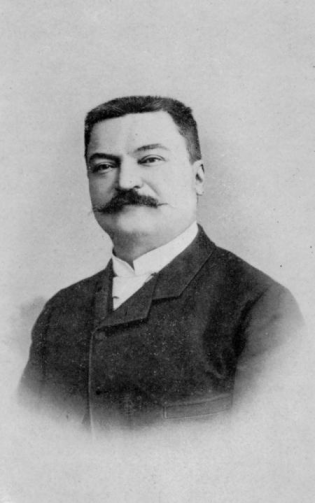

|  | La Torre di Hanoi è un celebre rompicapo matematico che ha una storia affascinante. Prende il nome dalla città di Hanoi, in Vietnam, dove secondo la leggenda sarebbe stato inventato. L'origine esatta della Torre di Hanoi è avvolta nel mistero, ma si ritiene che sia stata inventata da un matematico francese di nome Édouard Lucas nel 1883. Tuttavia, Lucas non attribuì il rompicapo a se stesso, ma lo collegò ad una leggenda vietnamita che narra di un tempio sacro con una serie di 64 dischi d'oro disposti in ordine decrescente di dimensioni su di un piolo di diamante. Secondo la leggenda, i monaci del tempio devono spostare i dischi da un piolo all'altro seguendo alcune regole senza mai porre un disco più grande su uno più piccolo. La Torre di Hanoi consiste in una serie di dischi di diametro crescente disposti inizialmente su uno dei tre pioli. Lo scopo è quello di spostare tutti i dischi da un piolo di partenza a un altro, con l'aiuto di un terzo piolo, rispettando le regole del gioco: è consentito spostare solo un disco alla volta e non è mai possibile posizionare un disco più grande sopra uno più piccolo. Ci sono molte versioni della leggenda, ma tutte ruotano attorno al concetto di pazienza, perseveranza e risoluzione dei problemi. La Torre di Hanoi è diventata un classico esempio di problema ricorsivo, ampiamente studiato in matematica e informatica per le sue applicazioni nell'algoritmo di risoluzione e nella teoria della complessità computazionale. |
Curiosita'
Numero di mosse: Il numero minimo di mosse richieste per risolvere la Torre di Hanoi è noto come numero di Lucas. Questo numero è esponenziale e può essere calcolato tramite la formula 2^n - 1, dove "n" rappresenta il numero di dischi.
Algoritmo ricorsivo: La soluzione più comune per risolvere la Torre di Hanoi è un algoritmo ricorsivo. Questo algoritmo sfrutta il concetto di dividere il problema in sotto-problemi più piccoli e risolverli uno per uno. È notevole perché dimostra l'efficacia della ricorsione nell'affrontare alcuni problemi.
Applicazioni in informatica: La Torre di Hanoi ha applicazioni pratiche nella teoria dei computer. È spesso utilizzata per illustrare concetti come la ricorsione, la complessità degli algoritmi e l'ottimizzazione dei codici.
Varianti e estensioni: Esistono molte varianti della Torre di Hanoi, che aggiungono regole extra o complicazioni al gioco base. Alcune di queste varianti includono l'aggiunta di più pioli, dischi di dimensioni diverse, o regole aggiuntive sul movimento dei dischi.
Record del mondo: Esistono competizioni e record ufficiali per la risoluzione della Torre di Hanoi con il minor numero di mosse. I professionisti di questo rompicapo hanno sviluppato tecniche speciali per ridurre al minimo il numero di mosse richieste.
Analogie filosofiche: La Torre di Hanoi è stata spesso usata come analogia in filosofia e psicologia per illustrare concetti come la ricerca della verità, il processo decisionale e la risoluzione dei problemi complessi. La sua struttura ricorsiva e la necessità di pianificazione a lungo termine la rendono una metafora potente per molte sfide nella vita umana.